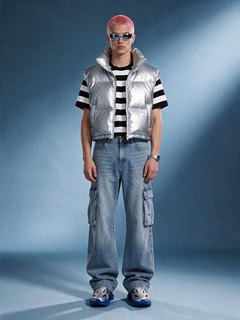
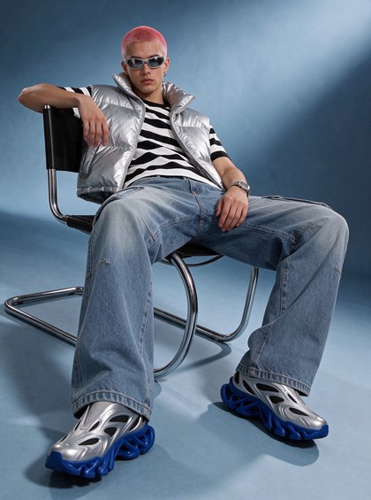
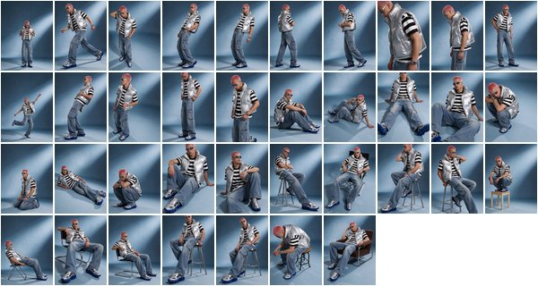
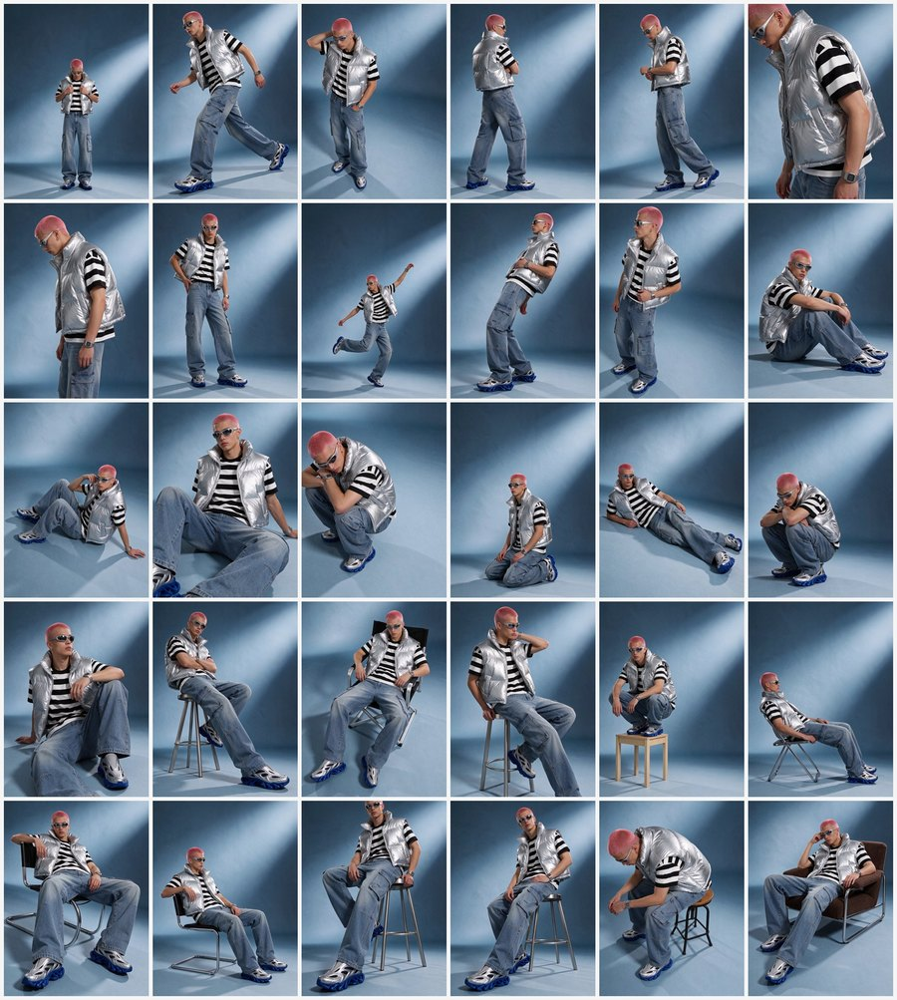

| pose |
|---|
| walking |
| slouched, arm over backrest |
| hand on head |
| leaning forward |
| kneeling |
| … |
| camera angle |
|---|
| eye level |
| wide-angle, close |
| from above |
| three-quarter |
| side view |
| … |
| prop |
|---|
| none |
| Bauhaus chrome chair |
| walnut bar stool |
| boucle armchair |
| white plinth |
| … |
| shot list · pose | camera angle |
|---|---|
| vest open | eye level |
| walking | low angle |
| … | |
| slouched, arm over backrest | wide-angle, close |
| … |

| shot | slouched · wide-angle, close |
| GPT-5 mini | keep · Bauhaus chrome chair |
| why | a natural slouch, the outfit stays readable |
| image | saved to a folder |

